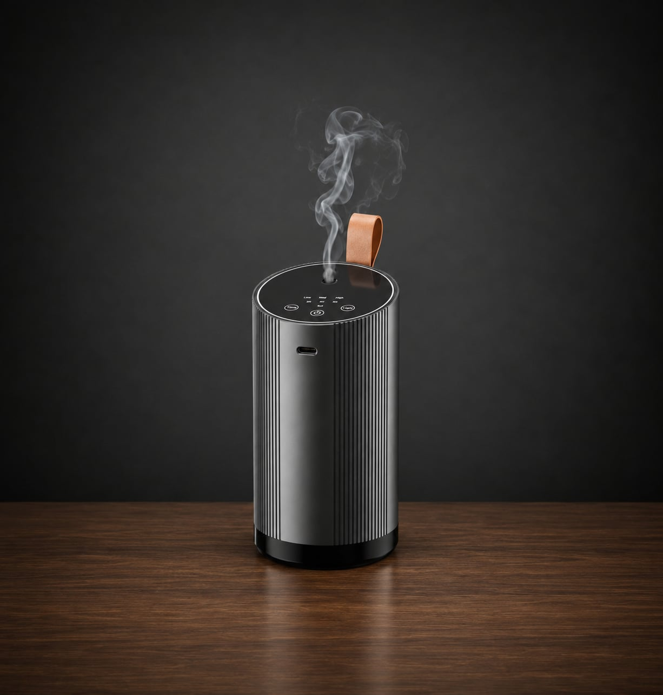
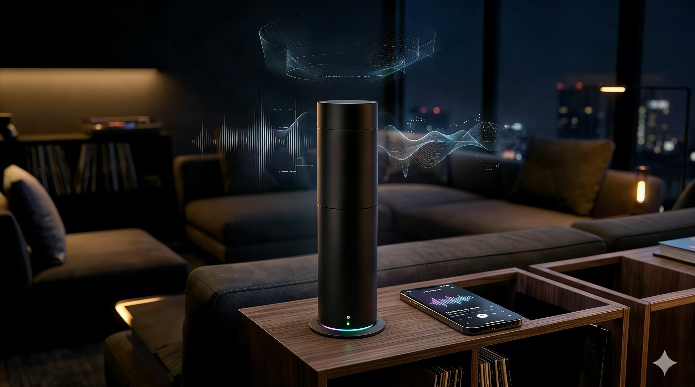

Our Visual Ethos
Scent turns digital moments into atmosphere. Synced with Sight, Touch, and Pleasure, it releases a matching scent profile so memories, moods, and companion interactions can linger beyond the screen.
The Hardware Matrix
Engineered for every layer of your existence.

Voyager
Continuous focus and road-fatigue mitigation through sharp ozone and citrus synthesis. Designed for the transit of the modern soul.

Essence
Precision diffusion for focused deep-work blocks. Features silent ultrasonic technology to maintain your cognitive flow state.

Aura Sync
The ultimate companion interface. Seamlessly integrates rhythmic misting, dynamic LED lighting, and spatial audio to create a complete sensory environment.
The Scent Library
Emotive cartridges designed by neural-olfactory specialists to evoke precise physiological responses.
Memory Corridor
A nostalgic blend of rain-wet stone and old paper. Ideal for deep reflection.
Zen Field
Minimalist green tea and bamboo. Designed to lower cortisol during intense work.
Digital Pulse
Sharp electric musk and cold eucalyptus. Instant focus for high-stakes gaming.
Organic Heart
Warm amber and subtle skin-musk. The scent of a digital companion's presence.
Atmospheric
Intelligence
We believe memory and emotion are anchored by scent. Scent maps your digital interactions—from high-intensity gaming to deep neural meditation—and synthesizes a shared biological atmosphere.
Scent Mapping
Real-time biological feedback drives olfactory profile shifts.
Shared Atmosphere
Sync scents with companions across the global synthesis network.

Technical
Foundation
- check_circleHigh-Frequency Ultrasonic Diffusion
- check_circleDeepSire Intelligence Integration
- check_circle500ml Reservoir for 12hr Continuous Use
- check_circleZero-Heat Cold Mist Protection
Begin Your
Synthesis Today.
The digital realm shouldn't just be seen and heard. It should be felt in the air you breathe.